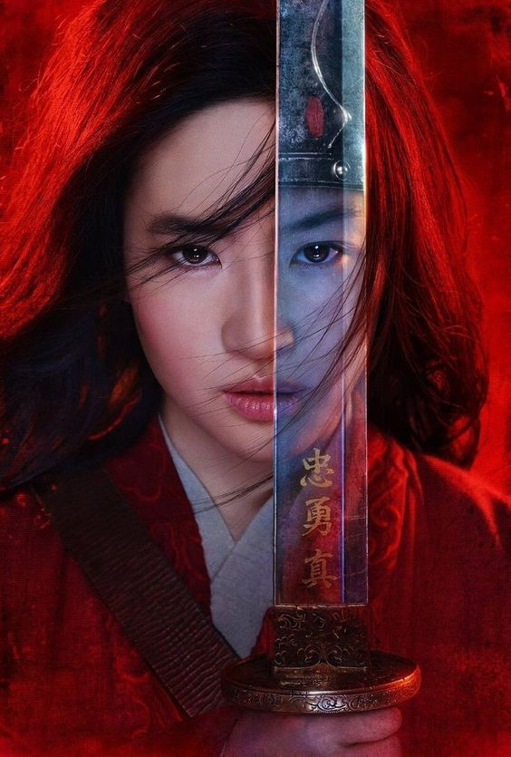

Мультфільм "Мулан" був створений студією Walt Disney Pictures. Він вийшов у 1998 році і став 36-м повнометражним анімаційним фільмом у класичній серії Disney. Режисерами фільму були Тоні Бенкрофт і Баррі Кукін, а сценарій написала Ріта Хсао.
"Мулан" базується на китайській легенді про Хуа Мулан, юну дівчину, яка прикидається хлопцем і відправляється на війну замість свого хворого батька. Фільм став успішним і отримав позитивні відгуки від глядачів та критиків.
Кілька цікавих фактів про мультфільм "Мулан":
Трейлер
Мультфільм "Мулан 2" є прямим продовженням оригінального фільму і був випущений у 2004 році. Його також зняла студія Walt Disney Pictures.
У цьому фільмі Мулан повертається до дому після війни і виявляє, що її батько домовився про її шлюб. Мулан розмірковує про свої почуття та своє місце в суспільстві.
Кілька цікавих фактів про мультфільм "Мулан 2":
Ці обидва мультфільми розповідають захоплюючі та важливі історії про сили самопожертви, відваги та справжньої сили в серці
Трейлер
Фільм "Мулан" є режисерською роботою Нікі Каро і є ремейком однойменного мультфільму Disney з 1998 року. Це епічна пригода, яка поєднує елементи акції, драми і пригоди. Фільм був знятий з великою увагою до деталей та зосереджується на китайській культурі і традиціях.
Кілька цікавих фактів про фільм "Мулан" (2020):
Фільм "Мулан" (2020) пропонує нову інтерпретацію знайомої історії, зосереджуючись на сили, відвазі та самовідданості героїні. Він пропонує глядачам захоплюючу подорож у світ давніх традицій та китайської культури, а також надихає на роздуми про важливість самовираження, відстоювання своїх переконань та вірності самому собі. Завдяки майстерній акторській грі, вражаючим візуальним ефектам та захоплюючій сюжетній лінії, фільм "Мулан" створює неперевершений кінематографічний досвід, який залишить глядачів під враженням і надихне їх на нові подорожі у світ давніх легенд та мужніх героїв.
Трейлер